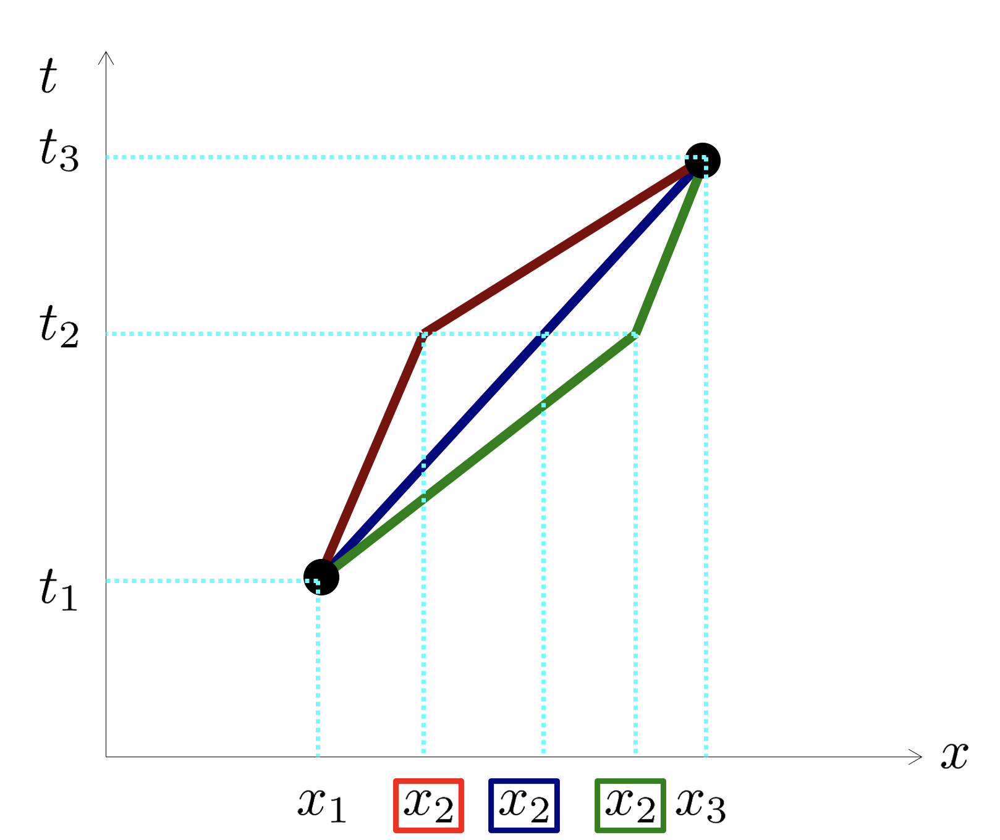

Forrige side🙂 🙁Maksimal aldringPADLET

Du får litt hjelp med denne figuren her. Men nå står du på egne ben! Merk at dere på prosjekt skal gjøre en slik utledning for et nytt tilfelle, og dette kan komme på eksamen, så det er viktig å få prøvd seg alene en gang. Og det vil hjelp på forståelsen for det som kommer, så dette er et godt øyeblikk å gjøre det på. Når du har gjort hele utledningen og funnet et størrelse som er bevart på samme måte som vi fant at γ er bevart i forrige utledning, kan du bla om.